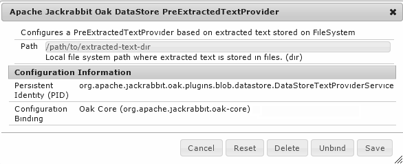

@since Oak 1.0.18, 1.2.3
Lucene indexing is performed in a single threaded mode. Extracting text from binaries is an expensive operation and slows down the indexing rate considerably. For incremental indexing this mostly works fine but if performing a reindex or creating the index for the first time after migration then it increases the indexing time considerably. To speed up such cases Oak supports pre extracting text from binaries to avoid extracting text at indexing time. This feature consist of 2 broad steps
For more details on this feature refer to OAK-2892
Oak run tool provides a tika command which supports traversing the repository and then extracting text from the binary properties.
Download following jars
Refer to oak-run setup for details about connecting to different types of NodeStore. Example below assume a setup consisting of SegmentNodeStore and FileDataStore. Depending on setup use the appropriate connection options.
You can use current oak-run version to perform text extraction for older Oak setups i.e. its fine to use oak-run from 1.7.x branch to connect to Oak repositories from version 1.0.x or later. The oak-run tooling connects to the repository in read only mode and hence safe to use with older version.
The generated extracted text dir can then be used with older setup.
Of the following steps #2 i.e. generation of csv file scans the whole repository. Hence this step should be run when system is not in active use. Step #3 only requires access to BlobStore and hence can be run while Oak application is in use.
As the first step you would need to generate a csv file which would contain details about the binary property. This file would be generated by using the tika command from oak-run. In this step oak-run would connect to repository in read only mode.
To generate the csv file use the --generate action
java -jar oak-run.jar tika \
--fds-path /path/to/datastore \
/path/to/segmentstore --data-file oak-binary-stats.csv --generate
If connecting to S3 this command can take long time because checking binary id currently triggers download of the actual binary content which we do not require. To speed up here we can use the Fake DataStore support of oak-run
java -jar oak-run.jar tika \
--fake-ds-path=temp \
/path/to/segmentstore --data-file oak-binary-stats.csv --generate
This would generate a csv file with content like below
43844ed22d640a114134e5a25550244e8836c00c#28705,28705,"application/octet-stream",,"/content/activities/jcr:content/folderThumbnail/jcr:content" 43844ed22d640a114134e5a25550244e8836c00c#28705,28705,"application/octet-stream",,"/content/snowboarding/jcr:content/folderThumbnail/jcr:content" ...
By default it scans whole repository. If you need to restrict it to look up under certain path then specify the path via --path option.
Once the csv file is generated we need to perform the text extraction. To do that we would need to download the tika-app jar from Tika downloads. You should be able to use 1.15 version with Oak 1.7.4 jar.
To perform the text extraction use the --extract action
java -cp oak-run.jar:tika-app-1.15.jar \
org.apache.jackrabbit.oak.run.Main tika \
--data-file binary-stats.csv \
--store-path ./store \
--fds-path /path/to/datastore extract
This command does not require access to NodeStore and only requires access to the BlobStore. So configure the BlobStore which is in use like FileDataStore or S3DataStore. Above command would do text extraction using multiple threads and store the extracted text in directory specified by --store-path.
Currently extracted text files are stored as files per blob in a format which is same one used with FileDataStore In addition to that it creates 2 files
This phase is incremental i.e. if run multiple times and same --store-path is specified then it would avoid extracting text from previously processed binaries.
Further the extract phase only needs access to BlobStore and does not require access to NodeStore. So this can be run from a different machine (possibly more powerful to allow use of multiple cores) to speed up text extraction. One can also split the csv into multiple chunks and process them on different machines and then merge the stores later. Just ensure that at merge time blobs*.txt files are also merged
Note that we need to launch the command with -cp instead of -jar as we need to include classes outside of oak-run jar like tika-app. Also ensure that oak-run comes before in classpath. This is required due to some old classes being packaged in tika-app
In this step we would configure Oak to make use of the pre extracted text for the indexing. Depending on how indexing is being performed you would configure the PreExtractedTextProvider either in OSGi or in oak-run index command
@since Oak 1.0.18, 1.2.3
For this look for OSGi config for Apache Jackrabbit Oak DataStore PreExtractedTextProvider

Once PreExtractedTextProvider is configured then upon reindexing Lucene indexer would make use of it to check if text needs to be extracted or not. Check TextExtractionStatsMBean for various statistics around text extraction and also to validate if PreExtractedTextProvider is being used.
Configure the directory storing pre extracted text via --pre-extracted-text-dir option in index command. See oak run indexing